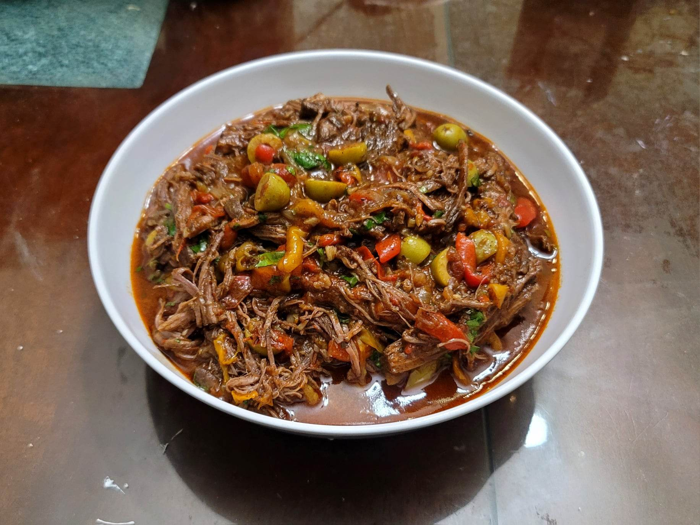

Ropa Vieja

Ingredients:
- 2 lb Flank steak, cut into 2-3 pieces if too large
- Salt, to taste
- Black pepper, to taste
- 3 tbsp Olive oil
- 1 large Onion, sliced
- 1 Red bell pepper, sliced
- 1 Green bell pepper, sliced
- 1 Yellow bell pepper, sliced
- 6 cloves Garlic, minced
- 1 tbsp Tomato paste
- 1 tsp Dried oregano
- 1 tsp Cumin
- 1 tsp Paprika
- 1/2 tsp Allspice
- 1/8 tsp Cloves
- 1/2 cup White wine
- 1 cup Chicken broth
- 1 14 oz can Crushed tomatoes
- 1 large Carrot, peeled, cut into thirds
- 1 rib Celery, cut into thirds
- 2 Bay leaves
- Optional: 1 tsp Chicken bouillon
- 1 cup Pimento-stuffed olives
- 1 4 oz jar sliced Pimentos
- Optional: 2 tbsp Capers, drained
- Cilantro, chopped
Instructions:
- Preheat an oven to 350 degrees Fahrenheit. Pat the beef dry and season with salt and pepper.
- In a large Dutch oven, heat 2 tbsp oil over medium-high heat. Add the beef and sear for about 3-4 minutes per side, in batches if necessary. Then remove the beef and reserve.
- Add the remaining 1 tbsp oil and add in the onions and bell peppers. Sauté until tender, about 5-7 minutes. Then reduce to medium-low and add in the garlic. Sauté another minute.
- Add the tomato paste, oregano, cumin, paprika, allspice, and cloves. Sauté for about a minute and then add in the white wine. Bring to a boil while deglazing the pan. Let boil for about for 1-2 minutes or until the alcohol is cooked off. Then stir in the chicken broth and crushed tomatoes.
- Add back the beef along with the carrot, celery, and bay leaves. Ensure everything is beneath the sauce, adding more broth if needed. Bring to a boil and then cover and transfer to the oven. Let cook for about 90 minutes.
- Optionally, in the last 20 minutes of baking stir in the chicken bouillon.
- Remove from the oven. Pick out the carrot, celery, and bay leaves and set aside. Remove the beef and shred before adding the beef back in. Stir in the olives, pimentos, and capers if using. Bring to a simmer and let cook until the sauce has thickened to preference.
- Season to taste and remove from heat. Stir in the cilantro and serve immediately with rice.